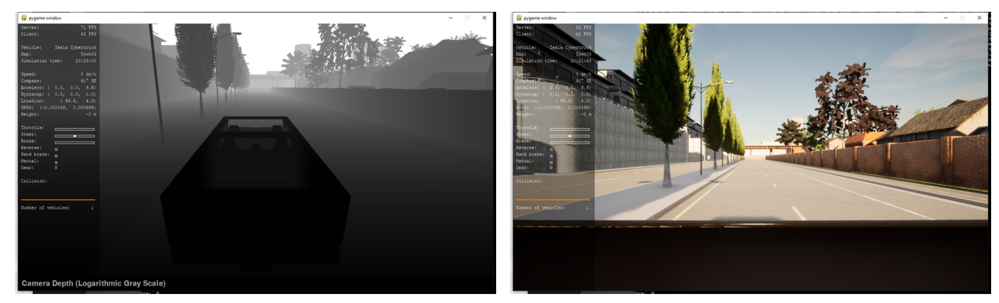
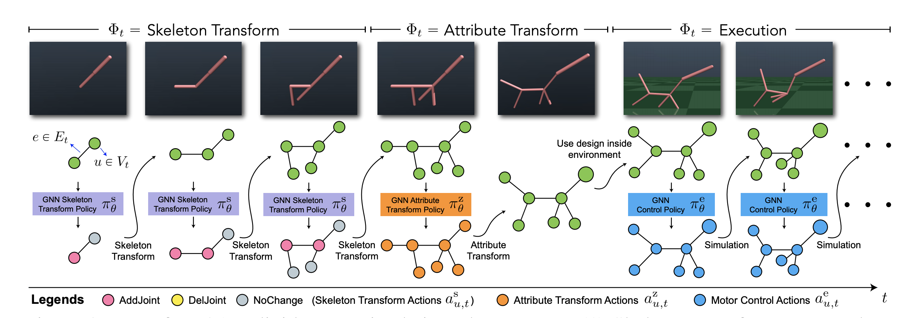
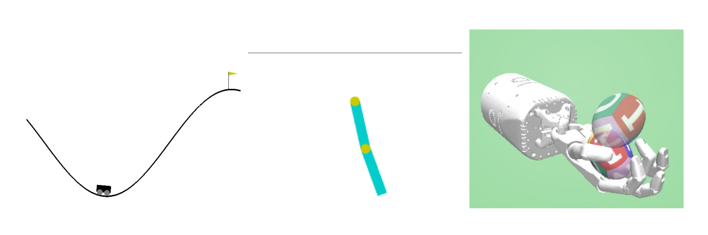
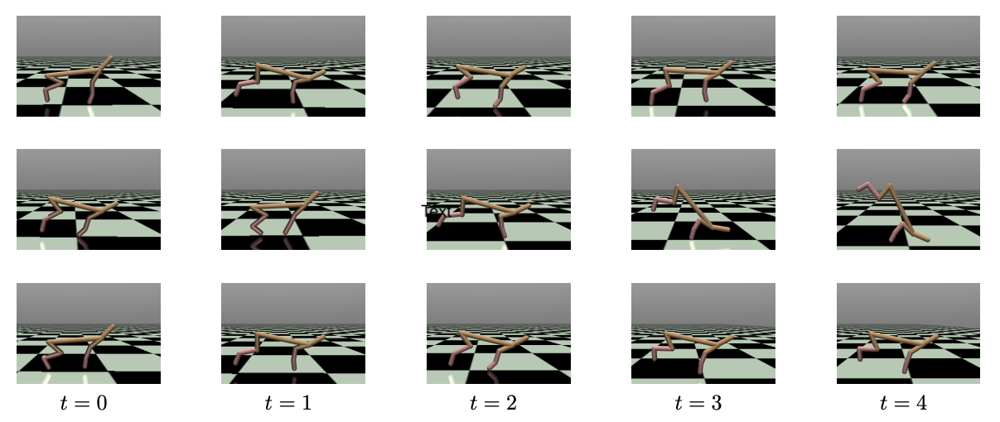

|
Research
I am broadly interested in machine learning, especially reinforcement learning.
I am interested in developing algorithms with theoretical guarantees and also testing their
empirical counterparts in practice.
|
Publication
 |
Efficient Reinforcement Learning in Block MDPs: A Model-free Representation Learning Approach
Xuezhou Zhang, Yuda Song, Masatoshi Uehara, Mengdi Wang, Alekh Agarwal, Wen Sun
ICML, 2022.
[code]
[Talk at RL theory seminars]
|
|  |
Online No-regret Model-Based Meta RL for Personalized Navigation
Yuda Song, Ye Yuan, Wen Sun, Kris Kitani
L4DC, 2022.
|
|  |
Transform2Act: Learning a Transform-and-Control Policy for Efficient Agent Design
Ye Yuan, Yuda Song, Zhengyi Luo, Wen Sun, Kris Kitani
ICLR, 2022. Oral presentation
[Project Page]
|
|  |
PC-MLP: Model-based Reinforcement Learning with Policy Cover Guided Exploration
Yuda Song, Wen Sun
ICML, 2021
[code]
|
|  |
Provably Efficient Model-based Policy Adaptation
Yuda Song, Aditi Mavalankar,
Wen Sun, Sicun Gao
ICML, 2020
[Project Page]
[code]
|
|
|
Teaching Assistant
UCSD CSE291: Topics in Search and Optimization (Winter 2020)
UCSD CSE154: Deep Learning (Fall 2019)
UCSD CSE150: Introduction to AI: Search and Reasoning (Winter 2019, Spring 2020)
UCSD CSE30: Computer Organization and Systems Programming (Spring 2019, Winter 2018)
UCSD CSE11: Introduction to CS & OOP (Fall 2018)
|
|
Service
Reviewer: AAAI (2021-), ICML (2021-), NeurIPS (2021-), ICLR (2022).
|
|
{kind=link}